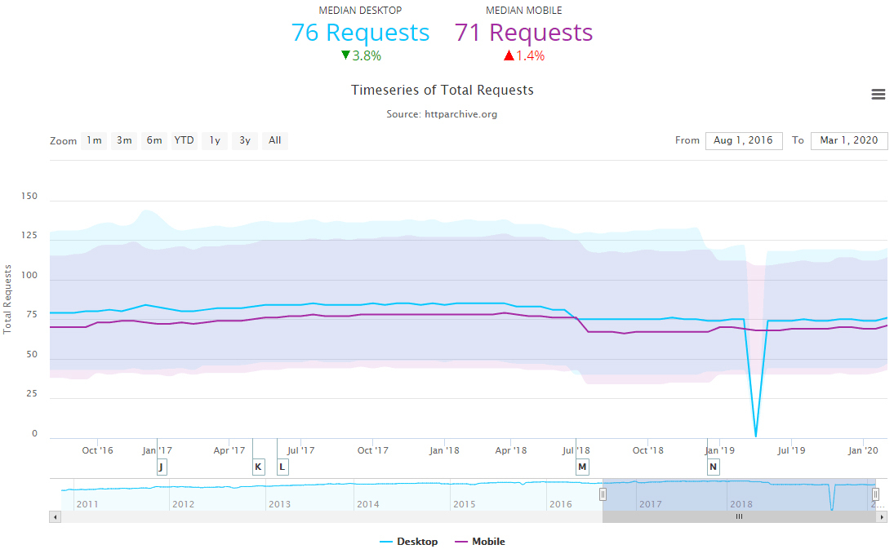
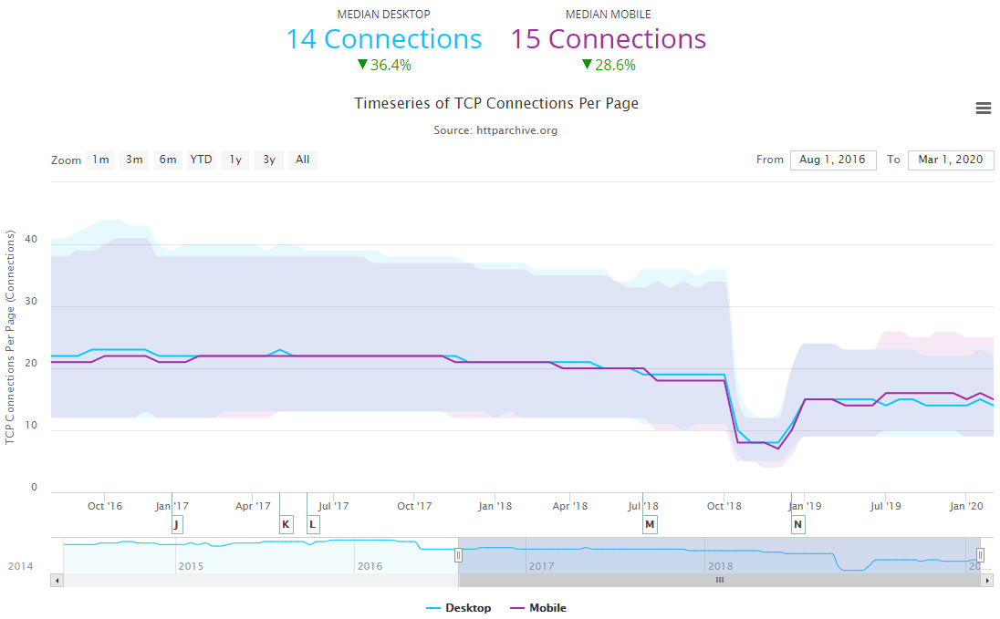
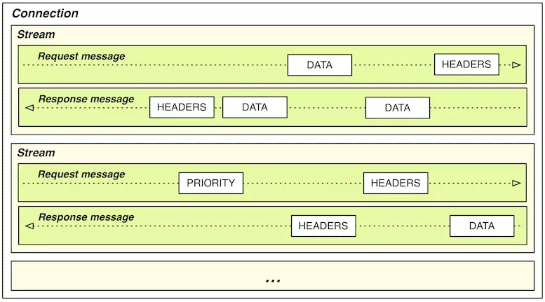

- 00 _导读 _ 什么是“The Fenix Project”？.md
- 00 开篇词 _ 如何构建一个可靠的分布式系统？.md
- 01 _ 原始分布式时代：Unix设计哲学下的服务探索.md
- 02 _ 单体系统时代：应用最广泛的架构风格.md
- 03 _ SOA时代：成功理论与失败实践.md
- 04 _ 微服务时代：SOA的革命者.md
- 05 _ 后微服务时代：跨越软件与硬件之间的界限.md
- 06 _ 无服务时代：“不分布式”云端系统的起点.md
- 07 _ 远程服务调用（上）：从本地方法到远程方法的桥梁.md
- 08 _ 远程服务调用（下）：如何选择适合自己的RPC框架？.md
- 09 _ RESTful服务（上）：从面向过程编程到面向资源编程.md
- 10 _ RESTful服务（下）：如何评价服务是否RESTful？.md
- 11 _ 本地事务如何实现原子性和持久性？.md
- 12 _ 本地事务如何实现隔离性？.md
- 13 _ 全局事务和共享事务是如何实现的？.md
- 14 _ 分布式事务之可靠消息队列.md
- 15 _ 分布式事务之TCC与SAGA.md
- 16 _ 域名解析系统，优化HTTP性能的第一步.md
- 17 _ 客户端缓存是如何帮助服务器分担流量的？.md
- 18 _ 传输链路，优化HTTP传输速度的小技巧.md
- 19 _ 如何利用内容分发网络来提高网络性能？.md
- 20 _ 常见的四层负载均衡的工作模式是怎样的？.md
- 21 _ 服务端缓存的三种属性.md
- 22 _ 分布式缓存如何与本地缓存配合，提高系统性能？.md
- 23 _ 认证：系统如何正确分辨操作用户的真实身份？.md
- 24 _ 授权（上）：系统如何确保授权的过程可靠？.md
- 25 _ 授权（下）：系统如何确保授权的结果可控？.md
- 26 _ 凭证：系统如何保证与用户之间的承诺是准确完整且不可抵赖的？.md
- 27 _ 保密：系统如何保证敏感数据无法被内外部人员窃取滥用？.md
- 28 _ 传输（上）：传输安全的基础，摘要、加密与签名.md
- 29 _ 传输（下）：数字证书与传输安全层.md
- 30 _ 验证：系统如何确保提交给服务的数据是安全的？.md
- 31 _ 分布式共识（上）：想用好分布式框架，先学会Paxos算法吧.md
- 32 _ 分布式共识（下）：Multi Paxos、Raft与Gossip，分布式领域的基石.md
- 33 _ 服务发现如何做到持续维护服务地址在动态运维中的时效性？.md
- 34 _ 路由凭什么作为微服务网关的基础职能？.md
- 35 _ 如何在客户端实现服务的负载均衡？.md
- 36 _ 面对程序故障，我们该做些什么？.md
- 37 _ 要实现某种容错策略，我们该怎么做？.md
- 38 _ 限流的目标与模式.md
- 39 _ 如何构建零信任网络安全？.md
- 40 _ 如何实现零信任网络下安全的服务访问？.md
- 41 _ 分布式架构中的可观测到底说的是什么？.md
- 42 _ 分析日志真的没那么简单.md
- 43 _ 一个完整的分布式追踪系统是什么样子的？.md
- 44 _ 聚合度量能给我们解决什么问题？.md
- 45 _ 模块导学：从微服务到云原生.md
- 46 _ 容器的崛起（上）：文件、访问、资源的隔离.md
- 47 _ 容器的崛起（下）：系统、应用、集群的封装.md
- 48 _ 以容器构建系统（上）：隔离与协作.md
- 49 _ 以容器构建系统（下）：韧性与弹性.md
- 50 _ 应用为中心的封装（上）：Kustomize与Helm.md
- 51 _ 应用为中心的封装（下）：Operator与OAM.md
- 52 _ Linux网络虚拟化（上）：信息是如何通过网络传输被另一个程序接收到的？.md
- 53 _ Linux网络虚拟化（下）：Docker所提供的容器通讯方案有哪些？.md
- 54 _ 容器网络与生态：与CNM竞争过后的CNI下的网络插件生态.md
- 55 _ 谈谈Kubernetes的存储设计理念.md
- 56 _ Kubernetes存储扩展架构：一个真实的存储系统如何接入或移除新存储设备？.md
- 57 _ Kubernetes存储生态系统：几种有代表性的CSI存储插件的实现.md
- 58 _ Kubernetes的资源模型与调度器设计.md
- 59 _ 透明通讯的涅槃（上）：通讯的成本.md
- 60 _ 透明通讯的涅槃（下）：控制平面与数据平面.md
- 61 _ 服务网格与生态：聊聊服务网格的两项标准规范.md
- 63 _ 基于Spring Boot的单体架构.md
- 64 _ 基于Spring Cloud的微服务架构.md
- 65 _ 基于Kubernetes的微服务架构.md
- 66 _ 基于Istio的服务网格架构.md
- 67 _ 基于云计算的无服务架构.md
- 春节特别放送（上）_ 有的放矢，事半功倍.md
- 春节特别放送（下）_ 积累沉淀，知行合一.md
- 用户故事 _ 詹应达：持续成长，不惧未来.md
- 结束语 _ 程序员之路.md
- 结课测试 _ 一套习题，测出你的掌握程度.md
18 _ 传输链路，优化HTTP传输速度的小技巧
你好，我是周志明。
在经过了客户端缓存的节流和DNS服务的解析指引以后，程序发出的请求流量就正式离开了客户端，踏上以服务器为目的地的旅途了。而这个过程就是我们今天这节课要讨论的主角：传输链路。
以优化链路传输为目的的前端设计原则未来或许不再适用
可能不少人的第一直觉都会认为，传输链路是完全不受开发者控制的因素，觉得网络路由跳点的数量、运营商铺设线路的质量，已经决定了线路带宽的大小、速率的高低。不过事实并非如此，程序发出的请求能否与应用层、传输层协议提倡的方式相匹配，对传输的效率也会有非常大的影响。
最容易体现出这点的，就是那些前端网页的优化技巧。我们只要简单搜索一下，就能找到很多以优化链路传输为目的的前端设计原则，比如经典的雅虎YSlow-23条规则中，就涵盖了很多与传输相关的内容。
下面我来给你简单举几个例子。
- Minimize HTTP Requests
即减少请求数量：对于客户端发出的请求，服务器每次都需要建立通信链路进行数据传输，这些开销很昂贵，所以减少请求的数量，就可以有效地提高访问性能。如果你是做前端开发的，那你可能就听说过下面这几种减少请求数量的手段：
a. 雪碧图（CSS Sprites）- b. CSS、JS文件合并/内联（Concatenation / Inline）- c. 分段文档（Multipart Document）- d. 媒体（图片、音频）内联（Data Base64 URI）- e. 合并Ajax请求（Batch Ajax Request）- f. ……
- Split Components Across Domains
即扩大并发请求数：现代浏览器（Chrome、Firefox）一般可以为每个域名支持6个（IE为8-13个）并发请求。如果你希望更快地加载大量图片或其他资源，就需要进行域名分片（Domain Sharding），将图片同步到不同主机或者同一个主机的不同域名上。
- GZip Components
即启用压缩传输：启用压缩能够大幅度减少需要在网络上传输内容的大小，节省网络流量。
- Avoid Redirects
即避免页面重定向：当页面发生了重定向，就会延迟整个文档的传输。在HTML文档到达之前，页面中不会呈现任何东西，会降低用户的体验。
- Put Stylesheets at the Top，Put Scripts at the Bottom
即按重要性调节资源优先级：将重要的、马上就要使用的、对客户端展示影响大的资源，放在HTML的头部，以便优先下载。
- ……
这些原则在今天暂且仍算得上是有一定价值，但如果在若干年后的未来再回头看它们，大概率其中的多数原则已经成了奇技淫巧，有些甚至成了反模式。
我为什么这么说呢？这是因为HTTP协议还在持续发展，从上世纪90年代的HTTP/1.0和HTTP/1.1，到2015年发布的HTTP/2，再到2019年的HTTP/3，由于HTTP协议本身的变化，造成了“适合HTTP传输的请求”的特征也在不断变化。
那么接下来，我们就来看看这里所说的特征变化指的都是什么。
连接数优化
我们知道，HTTP（特指HTTP/3以前）是以TCP为传输层的应用层协议，但HTTP over TCP这种搭配，只能说是TCP目前在互联网中的统治性地位所造就的结果，而不能说它们两者配合工作就是合适的。
为啥呢？一方面，你可以回想一下，平常你在上网的时候，平均每个页面停留的时间都有多长？然后你也可以大概估算一下每个页面中包含的资源（HTML、JS、CSS、图片等）数量，由此你其实就可以大致总结出HTTP传输对象的主要特征了，那就是数量多、时间短、资源小、切换快。
另一方面，TCP协议要求必须在三次握手完成之后才能开始数据传输，这是一个可能高达“百毫秒”为计时尺度的事件；另外，TCP还有慢启动的特性，这就会导致通信双方在刚刚建立连接时的传输速度是最低的，后面再逐步加速直至稳定。
由于TCP协议本身是面向长时间、大数据传输来设计的，所以只有在一段较长的时间尺度内，TCP协议才能展现出稳定性和可靠性的优势，不会因为建立连接的成本太高，成为了使用瓶颈。
所以我才说，HTTP over TCP这种搭配在目标特征上确实是有矛盾的，以至于HTTP/1.x时代，大量短而小的TCP连接导致了网络性能的瓶颈。
开发Tricks的使用困境
那么，为了缓解HTTP与TCP之间的矛盾，聪明的程序员们一面致力于减少发出的请求数量，另一面也在致力于增加客户端到服务端的连接数量。这就是我在前面提到的Yslow规则中，“Minimize HTTP Requests”与“Split Components Across Domains”两条优化措施的根本依据所在。
由此可见，通过前端开发者的各种Tricks，确实能够减少TCP连接数量的消耗，这是有数据统计作为支撑的。
HTTP Archive就对最近5年来数百万个URL地址进行了采样，并得出了一个结论：页面平均请求没有改变的情况下（桌面端下降3.8%，移动端上升1.4%），TCP连接正在持续且幅度较大地下降（桌面端下降36.4%，移动端下降28.6%）。我们一起来具体看看这个变化：

HTTP平均请求数量，70余个，没有明显变化

TCP连接数量，约15个，有明显下降趋势
但是，这些开发Tricks除了可以节省TCP连接以外，其实也给我们带来了不少的副作用，比如说：
- 如果你用CSS Sprites合并了多张图片，就意味着在任何场景下，哪怕你只用到了其中一张小图，也必须要完整地加载整个大图片；或者哪怕只有一张小图需要修改，也都会导致整个大图的缓存失效。类似的，样式、脚本等其他文件的合并，也会造成同样的问题。
- 如果你使用了媒体内嵌，除了要承受Base64编码导致传输容量膨胀1/3的代价以外（Base64以8 bit表示6 bit数据），也会无法有效利用缓存。
- 如果你合并了异步请求，就会导致所有请求的返回时间，都要受最慢的那个请求拖累，页面整体的响应速度会下降。
- 如果你把图片放到了不同子域下面，将会导致更大的DNS解析负担，而且浏览器对两个不同子域下的同一图片必须持有两份缓存，这也使得缓存效率下降。
- ……
所以我们也不难看出，一旦需要使用者通过各种Tricks，来解决基于技术根基而出现的各种问题时，就会导致TA再也没办法摆脱“两害相权取其轻”的困境。否则，这就不是Tricks，而是会成为一种标准的设计模式了。
连接复用技术的优势和缺陷
实际上，HTTP的设计者们也不是没有尝试过在协议层面去解决连接成本过高的问题，即使是HTTP协议的最初版本（指HTTP/1.0，忽略非正式的HTTP/0.9版本），就已经支持（HTTP/1.0中不是默认开启的，HTTP/1.1中变为默认）连接复用技术了，也就是今天我们所熟知的持久连接（Persistent Connection），或者叫连接Keep-Alive机制。
它的原理是，让客户端对同一个域名长期持有一个或多个不会用完即断的TCP连接。典型做法是在客户端维护一个FIFO队列，每次取完数据之后的一段时间内，不自动断开连接，以便获取下一个资源时可以直接复用，避免创建TCP连接的成本。
但是，连接复用技术依然是不完美的，最明显的副作用就是“队首阻塞”（Head-of-Line Blocking）问题。
我们来设想一下这样的场景：浏览器有10个资源需要从服务器中获取，这个时候它把10个资源放入队列，入列顺序只能是按照浏览器预见这些资源的先后顺序来决定。但是，如果这10个资源中的第1个就让服务器陷入了长时间运算状态，会发生怎样的状况呢？
答案是，当它的请求被发送到服务端之后，服务端就会开始计算，而在运算结果出来之前，TCP连接中并没有任何数据返回，此时后面的9个资源都必须阻塞等待。
虽然说服务端可以并行处理另外9个请求，比如第1个是复杂运算请求，消耗CPU资源；第2个是数据库访问，消耗数据库资源；第3个是访问某张图片，消耗磁盘I/O资源，等等，这就很适合并行。
但问题是，这些请求的处理结果无法及时发回给客户端，服务端也不能哪个请求先完成就返回哪个，更不可能把所有要返回的资源混杂到一起交叉传输。这是因为，只使用一个TCP连接来传输多个资源的话，一旦顺序乱了，客户端就很难区分清楚哪个数据包归属哪个资源了。
因此，在2014年IETF发布的RFC 7230中，提出了名为“HTTP管道”（HTTP Pipelining）复用技术，试图在HTTP服务器中也建立类似客户端的FIFO队列，让客户端一次性将所有要请求的资源名单全部发给服务端，由服务端来安排返回顺序，管理传输队列。
不过，无论队列维护是在服务端还是在客户端，其实都无法完全避免队首阻塞的问题。这是因为很难在真正传输之前，完全精确地评估出传输队列中每一项的时间成本，但由于服务端能够较为准确地评估资源消耗情况，这样确实能更紧凑地安排资源传输，保证队列中两项工作之间尽量减少空隙，甚至可能做到并行化传输，从而提升链路传输的效率。
可是，因为HTTP管道需要多方共同支持，协调起来相当复杂，因此推广得并不算成功。
后来，队首阻塞问题一直持续到HTTP/2发布后，才算是被比较完美地解决了。
解决方案：HTTP/2的多路复用技术
在HTTP/1.x中，HTTP请求就是传输过程中最小粒度的信息单位了，所以如果将多个请求切碎，再混杂在一块传输，客户端势必难以分辨重组出有效信息。
而在HTTP/2中，帧（Frame）才是最小粒度的信息单位，它可以用来描述各种数据，比如请求的Headers、Body，或者是用来做控制标识，如打开流、关闭流。
这里我说的流（Stream），是一个逻辑上的数据通道概念，每个帧都附带有一个流ID，以标识这个帧属于哪个流。这样，在同一个TCP连接中，传输的多个数据帧就可以根据流ID轻易区分出来，在客户端就能毫不费力地将不同流中的数据，重组出不同HTTP请求和响应报文来。
这项设计是HTTP/2的最重要的技术特征之一，被称为HTTP/2 多路复用（HTTP/2 Multiplexing）技术。

这样，有了多路复用的支持，HTTP/2就可以对每个域名只维持一个TCP连接（One Connection Per Origin），来以任意顺序传输任意数量的资源。这样就既减轻了服务器的连接压力，开发者也不用去考虑域名分片这种事情，来突破浏览器对每个域名最多6个连接数的限制了。
而更重要的是，没有了TCP连接数的压力，客户端就不需要再刻意压缩HTTP请求了，所有通过合并、内联文件（无论是图片、样式、脚本）以减少请求数的需求都不再成立，甚至反而是徒增副作用的反模式。
当然，我说这是反模式，可能还会有一些前端开发者不同意，觉得HTTP请求少一些总是好的。减少请求数量，最起码还减少了传输中耗费的Headers。
这里我们必须要先承认一个事实，在HTTP传输中，Headers占传输成本的比重是相当地大，对于许多小资源，甚至可能出现Headers的容量比Body的还要大，以至于在HTTP/2中必须专门考虑如何进行Header压缩的问题。
但实际上，有这样几个因素，就决定了即使是通过合并资源文件来减少请求数，对节省Headers成本来说，也并没有太大的帮助：
Header的传输成本在Ajax（尤其是只返回少量数据的请求）请求中可能是比重很大的开销，但在图片、样式、脚本这些静态资源的请求中，一般并不占主要比重。
在HTTP/2中，Header压缩的原理是基于字典编码的信息复用，简而言之是同一个连接上产生的请求和响应越多，动态字典积累得越全，头部压缩效果也就越好。所以，HTTP/2是单域名单连接的机制，合并资源和域名分片反而对性能提升不利。
与HTTP/1.x相反，HTTP/2本身反而变得更适合传输小资源了，比如传输1000张10K的小图，HTTP/2要比HTTP/1.x快，但传输10张1000K的大图，则应该HTTP/1.x会更快。这其中有TCP连接数量（相当于多点下载）的影响，更多的是由于TCP协议可靠传输机制导致的，一个错误的TCP包会导致所有的流都必须等待这个包重传成功，而这个问题就是HTTP/3.0要解决的目标了。因此，把小文件合并成大文件，在HTTP/2下是毫无好处的。
传输压缩
好，了解了TCP连接数的各种优化机制之后，我们再来讨论下，在链路优化中除缓存、连接之外的另一个重要话题：压缩。同时，这也可以解决我们之前遗留的一个问题：如何不以断开TCP连接为标志，来判断资源已传输完毕？
HTTP很早就支持了GZip压缩，因为HTTP传输的主要内容，比如HTML、CSS、Script等，主要是文本数据，因此对于文本数据启用压缩的收益是非常高的，传输数据量一般会降至原有的20%左右。而对于那些不适合压缩的资源，Web服务器则能根据MIME类型，来自动判断是否对响应进行压缩。这样，对于已经采用过压缩算法存储的资源，比如JPEG、PNG图片，就不会被二次压缩，空耗性能了。
不过，大概没有多少人想过，压缩其实跟我们前面提到的，用于节约TCP的持久连接机制是存在冲突的。
在网络时代的早期，服务器的处理能力还很薄弱，为了启用压缩，会把静态资源预先压缩为.gz文件的形式给存放起来。当客户端可以接受压缩版本的资源时（请求的Header中包含Accept-Encoding: gzip），就返回压缩后的版本（响应的Header中包含Content-Encoding: gzip），否则就返回未压缩的原版。这种方式被称为“静态预压缩”（Static Precompression）。
而现代的Web服务器处理能力有了大幅提升，已经没有人再采用这种麻烦的预压缩方式了，都是由服务器对符合条件的请求，在即将输出时进行“即时压缩”（On-The-Fly Compression），整个压缩过程全部在内存的数据流中完成，不必等资源压缩完成再返回响应，这样可以显著提高“首字节时间”（Time To First Byte，TTFB），改善Web性能体验。
而这个过程中唯一不好的地方，就是服务器再也没有办法给出Content-Length这个响应Header了。因为输出Header时，服务器还不知道压缩后资源的确切大小。
那看到这里，你想明白即时压缩与持久连接的冲突在哪了吗？
实际上，持久连接机制不再依靠TCP连接是否关闭，来判断资源请求是否结束了。它会重用同一个连接，以便向同一个域名请求多个资源。这样，客户端就必须要有除了关闭连接之外的其他机制，来判断一个资源什么时候才算是传递完毕。
这个机制最初（在HTTP/1.0时）就只有Content-Length，即靠着请求Header中明确给出资源的长度，传输到达该长度即宣告一个资源的传输已经结束。不过，由于启用即时压缩后就无法给出Content-Length了，如果是HTTP/1.0的话，持久连接和即时压缩只能二选其一。事实上，在HTTP/1.0中这两者都支持，却默认都是不启用的。
另外，依靠Content-Length来判断传输结束的缺陷，不仅只有即时压缩这一种场景，对于动态内容（Ajax、PHP、JSP等输出）等应用场景，服务器也同样无法事先得知Content-Length。
不过，HTTP/1.1版本中已经修复了这个缺陷，并增加了另一种“分块传输编码”（Chunked Transfer Encoding）的资源结束判断机制，彻底解决了Content-Length与持久连接的冲突问题。
分块编码的工作原理相当简单：在响应Header中加入“Transfer-Encoding: chunked”之后，就代表这个响应报文将采用分块编码。此时，报文中的Body需要改为用一系列“分块”来传输。每个分块包含十六进制的长度值和对应长度的数据内容，长度值独占一行，数据从下一行开始。最后以一个长度值为0的分块，来表示资源结束。
给你举个具体的例子（例子来自于维基百科，为便于观察，只分块，未压缩）：
HTTP/1.1 200 OK
Date: Sat, 11 Apr 2020 04:44:00 GMT
Transfer-Encoding: chunked
Connection: keep-alive
25
This is the data in the first chunk
1C
and this is the second one
3
con
8
sequence
0
根据分块长度就可以知道，前两个分块包含显式的回车换行符（CRLF，即\r\n字符）
"This is the data in the first chunk\r\n" (37 字符 => 十六进制: 0x25)
"and this is the second one\r\n" (28 字符 => 十六进制: 0x1C)
"con" (3 字符 => 十六进制: 0x03)
"sequence" (8 字符 => 十六进制: 0x08)
所以解码后的内容为：
This is the data in the first chunk
and this is the second one
consequence
另外，这里你要知道的是，一般来说，Web服务器给出的数据分块大小应该（但并不强制）是一致的，而不是像这个例子一样随意。
HTTP/1.1通过分块传输解决了即时压缩与持久连接并存的问题，到了HTTP/2，由于多路复用和单域名单连接的设计，已经不需要再刻意去强调持久连接机制了，但数据压缩仍然有节约传输带宽的重要价值。
快速UDP网络连接
OK，那么到这里，我们还需要明确一件事情，就是HTTP是应用层协议，而不是传输层协议，它的设计原本并不应该过多地考虑底层的传输细节。从职责上来讲，持久连接、多路复用、分块编码这些能力，已经或多或少超过了应用层的范畴。
所以说，要想从根本上改进HTTP，就必须直接替换掉HTTP over TCP的根基，即TCP传输协议，这便是最新一代HTTP/3协议的设计重点。
推动替换TCP协议的先驱者并不是IETF，而是Google公司。目前，世界上只有Google公司具有这样的能力，这并不是因为Google的技术实力雄厚，而是由于它同时持有着占浏览器市场70%份额的Chrome浏览器，与占移动领域半壁江山的Android操作系统。
2013年，Google在它的服务器（如Google.com、YouTube.com等）及Chrome浏览器上，同时启用了名为“快速UDP网络连接”（Quick UDP Internet Connections，QUIC）的全新传输协议。
在2015年，Google将QUIC提交给了IETF，并在IETF的推动下，对QUIC进行重新规范化（为以示区别，业界习惯将此前的版本称为gQUIC，规范化后的版本称为iQUIC），使其不仅能满足HTTP传输协议，日后还能支持SMTP、DNS、SSH、Telnet、NTP等多种其他上层协议。
2018年末，IETF正式批准了HTTP over QUIC使用HTTP/3的版本号，将其确立为最新一代的互联网标准。
那么，你从QUIC的名字上就能看出，它会以UDP协议作为基础。UDP协议没有丢包自动重传的特性，因此QUIC的可靠传输能力并不是由底层协议提供的，而是完全由自己来实现。由QUIC自己实现的好处是能对每个流能做单独的控制，如果在一个流中发生错误，协议栈仍然可以独立地继续为其他流提供服务。
这个特性对提高易出错链路的性能方面非常有用。因为在大多数情况下，TCP协议接到数据包丢失或损坏通知之前，可能已经收到了大量的正确数据，但是在纠正错误之前，其他的正常请求都会等待甚至被重发。这也是前面我在讲连接数优化的时候，提到HTTP/2没能解决传输大文件慢的根本原因。
此外，QUIC的另一个设计目标是面向移动设备的专门支持。
以前TCP、UDP传输协议在设计的时候，根本不可能设想到今天移动设备盛行的场景，因此肯定不会有任何专门的支持。而QUIC在移动设备上的优势就体现在网络切换时的响应速度上，比如当移动设备在不同WiFi热点之间切换，或者从WiFi切换到移动网络时，如果使用TCP协议，现存的所有连接都必定会超时、中断，然后根据需要重新创建。这个过程会带来很高的延迟，因为超时和重新握手都需要大量的时间。
为此，QUIC提出了连接标识符的概念，该标识符可以唯一地标识客户端与服务器之间的连接，而无需依靠IP地址。这样，在切换网络后，只需向服务端发送一个包含此标识符的数据包，就可以重用既有的连接。因为即使用户的IP地址发生了变化，原始连接标识符依然是有效的。
到现在，无论是TCP协议还是HTTP协议，都已经存在了数十年的时间。它们积累了大量用户的同时，也承载了很重的技术惯性。就算是Google和IETF，要是想把HTTP从TCP迁移出去，也不是件容易的事儿。最主要的一个问题就是，互联网基础设施中的许多中间设备，都只面向TCP协议去建造，也只对UDP做很基础的支持，有的甚至会完全阻止UDP的流量。
所以，Google在Chromium的网络协议栈中，同时启用了QUIC和传统TCP连接，并在QUIC连接失败时，能以零延迟回退到TCP连接，尽可能让用户无感知地、逐步地扩大QUIC的使用面。
根据W3Techs的数据，截至2020年10月，全球已经有48.9%的网站支持了HTTP/2协议，按照维基百科中的记录，这个数字在2019年6月份的时候，还只是36.5%。另外在HTTP/3方面，今天也已经有了7.2%的使用比例。
由此我们可以肯定地说，目前网络链路传输这个领域正处于新旧交替的时代，许多既有的设备、程序、知识，都会在未来几年的时间里出现重大更新。
小结
这节课，我们一起了解了HTTP传输的优化技巧。HTTP的意思就是超文本传输协议，但它并不是只将内容顺利传输到客户端就算完成任务了，其中，如何做到高效、无状态也是很重要的目标。
另外你还要记住的是，在HTTP/2之前，要想在应用一侧优化传输，就必须要同时在其他方面付出相应的成本，而HTTP/2中的多路复用、头压缩等改进项，就从根本上给出了传输优化的解决方案。
一课一思
HTTP/2和HTTP/3已分别在2015年、2018年末成为正式标准，你参与的项目是否有使用到这些新的标准呢？对此你有什么思考和发现？
欢迎给我留言，分享你的看法。如果你觉得有收获，也欢迎把今天的内容分享给更多的朋友。感谢你的阅读，我们下一讲再见。
© 2019 - 2023 Liangliang Lee. Powered by gin and hexo-theme-book.